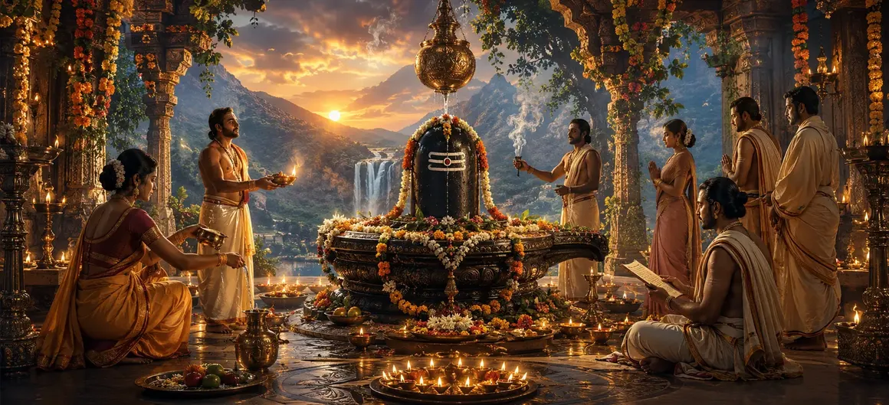

The Worship of Shiva with Ancillary Rites
The sixty-first chapter of the Vayaviya Samhita elaborates on the vital auxiliary rituals and ancillary rites (Anga-pujas) that accompany and complete the formal worship of Lord Shiva.
Rishi Vayu meticulously guides the sages through the protective wards, guardian deity invocations, and supplementary offerings necessary for flawless ritual execution.
This chapter bridges main worship with comprehensive ritual protection and completion.
Chapter 61 Highlights
Protective Wards
Safeguarding the ritual space from negativity.
Guardian Deities
Honoring attendant deities and ganas.
Anga-Pujas
Worshiping the limbs and attributes of Shiva.
Supplementary Rites
Executing supportive ritual components.
Ritual Perfection
Ensuring fruitful culmination of worship.
Path Forward
Exploring the rite of sacrifice in Chapter 62.
Core Topics in This Chapter
- 01Introduction to Ancillary Rites (Anga-pujas) in Worship→
- 02Establishment of Protective Boundaries and Wards→
- 03Worship of Lord Shiva's Attendants and Ganas→
- 04Supplementary Offerings and Ritual Vessel Purification→
- 05Integrating External Ancillary Rites with Inner Devotion→
- 06Spiritual Fruits Derived from Complete Ancillary Worship→
- 07Transition to Chapter 62 (The Rite of Sacrifice)→
Introduction to Ancillary Rites (Anga-pujas) in Worship
Rishi Vayu explains that supreme worship cannot stand in isolation; it requires supportive ancillary rites to shield and nourish the spiritual core.
These auxiliary rites create a harmonious energetic container for divine communion.
Establishment of Protective Boundaries and Wards
The ritual manual prescribes sacred mantras and gestures to seal the worship area, keeping out distracting influences and negative energies.
Sanctification of directions safeguards the practitioner's focused state.
Worship of Lord Shiva's Attendants and Ganas
Before directly adoring the Supreme Lord, the devotee pays homage to Nandi, Bhringi, and the divine Ganas guarding Shiva's abode.
Honoring the attendants ensures smooth passage into the inner sanctum of meditation.
Supplementary Offerings and Ritual Vessel Purification
Every tool, water vessel, and flower offering undergoes specific purificatory rites (Shodhana) to elevate them to a divine standard.
Purity of implements mirrors the purity of the devotee's intent.
Integrating External Ancillary Rites with Inner Devotion
The sage stresses that mechanical performance of ancillary rites lacks power unless married to genuine bhakti and single-minded concentration.
External procedure and internal surrender must beat as one heart.
Spiritual Fruits Derived from Complete Ancillary Worship
Executing worship along with all ancillary rites cleanses subtle blockages, enhances mental clarity, and grants profound spiritual stability.
The seeker becomes a worthy vessel for supreme grace.
Transition to Chapter 62 (The Rite of Sacrifice)
Having detailed the worship of Shiva with ancillary rites in Chapter 61, Rishi Vayu prepares to narrate Chapter 62, 'The Rite of Sacrifice'.
This next chapter will expand into the sacrificial fire rites and ritual oblations dedicated to Lord Shiva.
Key Teachings of Chapter 61
Boundary Guard
Sealing the ritual area with sacred mantras.
Gana Homage
Respecting Nandi and divine attendants.
Vessel Shodhana
Purifying tools and offerings before use.
Anga Puja
Adoring the limbs and attributes of Shiva.
Focused Intention
Marrying external form with inner devotion.
Sacrifice Prelude
Setting up fire rites for Chapter 62.
Spiritual Reflection
Ancillary rites are the protective walls and fragrant flowers surrounding the altar of the heart, ensuring that the worship of Lord Shiva remains pure, protected, and fully fruitful.
Living the Message of Chapter 61
Pay attention to details in your spiritual discipline, ensuring that your actions, thoughts, and words are aligned with purity.
Respect those who support your spiritual journey and honor every supportive element in your daily practice.
Let mindfulness guard your inner temple against distractions.
Key Spiritual Concepts
Ritual worship of the limbs, attendants, and attributes of the deity.
Sealing and protecting the quarters with protective mantras.
Honoring the divine retinue and attendants of Lord Shiva.
Purification of ritual items and offerings before worship.
Harmonious integration of all auxiliary ritual offerings.
Attaining the full spiritual reward of flawless worship.
Chapter Summary
Vayaviya Samhita Chapter 61 details the worship of Shiva with ancillary rites (Anga-pujas), covering protective boundaries, guardian deity veneration, vessel purification, and the integration of external auxiliary rites with inner devotion. This chapter paves the way for Chapter 62, 'The Rite of Sacrifice'.
Frequently Asked Questions
1. What is the primary focus of Vayaviya Samhita Chapter 61?
Chapter 61 focuses on the auxiliary rituals and ancillary rites (Anga-pujas) that support and complete the proper worship of Lord Shiva.
2. Why are ancillary rites important in Shaiva worship?
Ancillary rites protect the ritual space, invoke guardian deities, purify the instruments of worship, and ensure the spiritual efficacy of the main practice.
3. Who expounds these ancillary rituals to the sages?
Rishi Vayu details the precise auxiliary rites and supplementary procedures to the assembled sages.
4. What is the next chapter for navigation after Chapter 61?
The next chapter for navigation is titled 'The Rite of Sacrifice'.
“When protective wards and ancillary rites cradle the worship of Lord Shiva, the ritual becomes an impregnable fortress of divine light and liberation.”
Continue Through Vayaviya Samhita
Chapter 61 concludes The Worship of Shiva with Ancillary Rites. Continue to The Rite of Sacrifice.